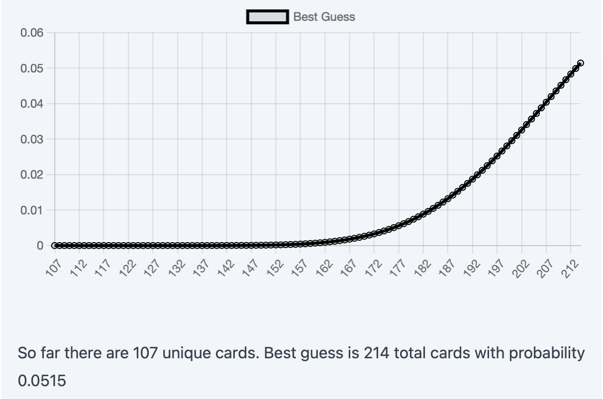
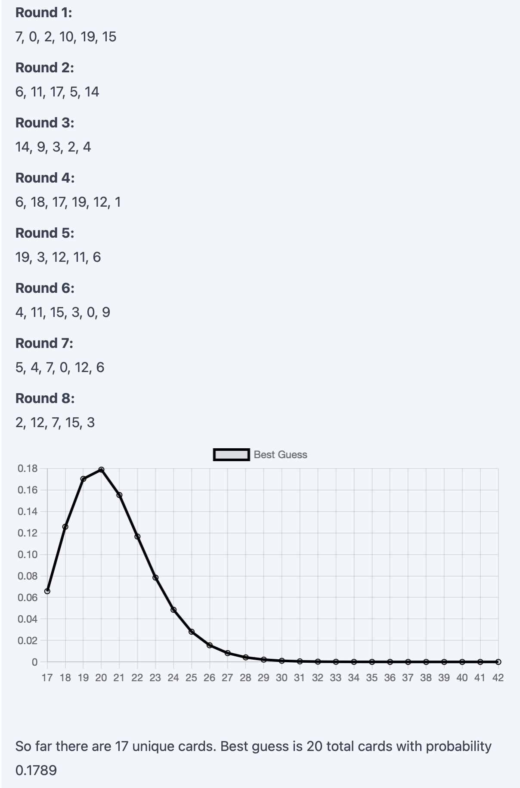

Heads Up
June 6, 2022Recently, my roommmate showed me a Heads Up competition where the category was UCLA. Seeing how it was odd that the category was given beforehand, we naturally downloaded the deck and started playing. After a couple of tries, I thought, "how feasible is it to estimate the total number of cards in the deck after playing it a couple of times?"
1. Population Size Estimation
Let's play a game...I have a deck of unique cards hidden in a box. We'll play a game where you try to guess the total number of cards in the deck. For \(k\) rounds, I'll shuffle the deck at the beginning of each round \(i\), reveal to you \(c_i\) cards without replacement, then put them back in the deck. After \(k\) rounds, you will have seen \(c_1 + \ldots + c_k \) not necessarily unique cards (as after each round the cards are placed back into the deck and shuffled).
What's your strategy?
Play It Here!
It's important to realize that when the deck is enormous, there's only a very small chance that we see the same cards twice or more; once a round ends and the cards get shuffled back into the deck, we're probably not seeing them again. Imagine there were a billion cards and in each round, we only draw two. If in the first round we saw A and B, how likely do you think it will be that we see those cards again in the next round?
Let's say we saw the card A on round \(i\). If \(N\) is the size of the deck, the chance that we see it again on the next round is $$ \mathbb{P}( \text{ Seeing A again } ) = c_{i+1} / N $$ You can convince yourself this is true by imagining one shuffles the deck and draws the top \(c_{i+1}\) cards. We will see card A if it lies in one of the top \(c_{i+1}\) positions (out of the \(N\) possible positions it could be). When the deck is large, \(N\) will make the probability tend towards \(0\).
2. Bayesian Probability
Given the circumstances...To tackle this problem, we consider conditional probabilities. For example, the probability that the dishes are clean given the dishwasher is broken can be written as $$ \mathbb{P}(\text{ Dishes clean } | \text{ Dishwasher broken })\ [ = 0] $$
The power of conditional probabilities become clear when we incorporate Bayes' theorem: $$ \mathbb{P}(X | Y) = \frac{\mathbb{P}(Y | X) \mathbb{P}(X)}{\mathbb{P}(Y)} $$ With some brief definitions:
- \(\mathbb{P}(Y | X)\) - the likelihood, which is the conditional probability of \(Y\) given \(X\)
- \(\mathbb{P}(X)\) - the prior, which represents our beliefs of \(X\) before observing anything
- \(\mathbb{P}(X | Y)\) - the posterior, which represents our beliefs of \(X\) after observing something
- \(\mathbb{P}(Y)\) - the marginal probability, which really just serves as a normalizing term
Let's take a quick pause and consider what's going on at a high level. We start with some idea of a random event \(X\) represented by \(\mathbb{P}(X)\), our prior. This could be some preconceived notion we have based on our own experiences, or can be completely uniformly random if we have no intuition. Then, by observing event \(Y\), we update our prior \(\mathbb{P}(X)\) into a posterior \(\mathbb{P}(X|Y)\) using the above equation. Intuitively, we're refining our beliefs of \(X\) in light of new evidence: \(\mathbb{P}(X) \mapsto \mathbb{P}(X|Y)\).
This allows us to ask "what is the probability that the deck size is \(N\) given that we've seen some repetition and some new cards?"
Suppose we drew three cards on round 1 and saw cards A, B, and C
A
B
C
Then on round 2, we drew three more cards and saw A, B, and D
A
B
D
From these two rounds, we observed that we got two cards in common (A and B) and one card different (D). The probability of this happening given there are \(N\) cards in total is $$ \mathbb{P}( \text{Observation} | \text{$N$ total cards}) = \frac{N - 3}{N \choose 3} $$ There are \(N \choose 3\) ways of picking three cards, and out of all these ways of picking three cards, only \(N-3\) of them give us two same cards as round 1 and one different card.
Now, we use Bayes' theorem to calculate the probability of there being \(N\) cards. $$ \begin{align} &\mathbb{P}(\text{$N$ total cards} | \text{Observation}) \\ =& \frac{\mathbb{P}( \text{Observation} | \text{$N$ total cards}) \mathbb{P}(\text{$N$ total cards})}{\mathbb{P}(\text{Observations})} \\ =& \frac{N - 3}{N \choose 3} \cdot \frac{ \mathbb{P}(\text{$N$ total cards})}{\mathbb{P}(\text{Observations})} \end{align} $$
Which after removing the denominator (as it is a constant), we can say $$ \mathbb{P}(\text{$N$ total cards} | \text{Observation}) \propto \frac{N - 3}{N \choose 3} \cdot \mathbb{P}(\text{$N$ total cards}) $$
Now, what should we pick for the prior? Well in the above game, the deck size is picked randomly between \(6\) and \(20\). For Heads Up, I'd imagine there are around \(100\) cards per deck. For now, let's pick our prior to be a uniform distribution between \(6\) and \(20\) (inclusive), which means $$ \mathbb{P}(\text{$N$ total cards}) = \frac{1}{15} $$ It doesn't really matter what the actual probability is though because as long as we assume a uniform distribution, we can say $$ \mathbb{P}(\text{$N$ total cards} | \text{Observation}) \propto \frac{N - 3}{N \choose 3} $$
Now, we can continue the example and normalize the probabilities to get an actual distribution. However, we can stop here because we really just care about what's the most likely value for \(N\), which we get by maximizing the expression it's proportional to. In the case of the example, this is achieved when \(N = 4\), so we can "guess" that there are four cards in the deck.
It's important to point out that when our prior is a uniform distribution, we can say $$ \mathbb{P}(X | Y) \propto \mathbb{P}(Y | X) $$ From this property, we can compute the posterior \(\mathbb{P}(X | Y)\) from just normalizing the likelihood \(\mathbb{P}(Y | X)\). More useful to us though is that $$ \arg\max_{X} \mathbb{P}(X | Y) = \arg\max_{X} \mathbb{P}(Y | X) $$ which means $$ \begin{align} \arg\max_{N} \mathbb{P}(\text{$N$ total cards} | \text{Observation}) \\ = \arg\max_{N} \mathbb{P}(\text{Observation} | \text{$N$ total cards}) \end{align} $$ That is to say, the most likely number of cards in the deck is whichever maximizes the likelihood of our observations.
3. Generalizing
This boutta get trippyAlthough it's nice that we have a working example, let's try to apply this method to multiple rounds. First, we'll consider the likelihood that between two rounds, we saw some number of similar cards. Suppose between the \(c_i\) cards we saw in round \(i\) and the \(c_j\) cards we saw in round \(j\), there were \(s\) cards that were in both rounds. The likelihood of this given \(N\) total cards in the deck is $$ \mathbb{P}(\text{Observation} | \text{$N$ total cards}) = \frac{{N - c_i} \choose {c_j - s}}{N \choose c_j} $$ There are \(N \choose c_j\) ways to pick \(c_j\) cards in round \(j\). Out of these ways to pick \(c_j\) cards, exactly \({N - c_i} \choose {c_j - s}\) of them keeps exactly \(s\) cards the same between round \(i\) and round \(j\).
There are two interesting things to point out here.
- Recall that in the previous example, we derived the likelihood $$ \mathbb{P}(\text{$N$ total cards} | \text{Observation}) \propto \frac{N - 3}{N \choose 3} $$ Check for yourself that plugging in \(c_i = c_j = 3\) and \(s = 2\) yields the same expression we derived for the earlier example.
- If we swap \(i\) and \(j\), we get a different function but it's only a constant scaling factor different. This means the posterior distribution induced by this swapped likelihood function is still the same. (Why?)
After the second round, each set of cards we draw will have more than one set of cards to compare to from previous rounds (round 3 can be compared to round 2 and/or round 1). How do we aggregate all these comparisons? To rectify this, we'll consider Bayes' theorem conditioned on multiple events. $$ \begin{multline} \mathbb{P}(\text{$N$ total cards} | \{\text{Observation}_1, \text{Observation}_2, \ldots\}) \\ \propto \mathbb{P}(\{\text{Observation}_1, \text{Observation}_2, \ldots\} | \text{$N$ total cards}) \end{multline} $$
Since all the rounds are indepedent, this means our observations of the current round comparisons to the previous rounds are also all independent, meaning $$ \begin{multline} \mathbb{P}(\text{$N$ total cards} | \{\text{Observation}_1, \text{Observation}_2, \ldots\}) \\ \propto \mathbb{P}(\text{Observation}_1 | \text{$N$ total cards}) \cdot \mathbb{P}(\text{Observation}_2 | \text{$N$ total cards}) \cdots \end{multline} $$
This means after round \(k + 1\), we'll have \(k\) different "observations" or comparisons to be made between the newest round \(k+1\) and each of the first \(k\) rounds. At each round, we're able to create a posterior distribution that accounts for all the previous rounds' information.
Let's revisit the example from before but we'll consider what happens on round 3. As before, on round 1 we see cards A, B, and C.
A
B
C
Then on round 2, we drew three more cards and saw A, B, and D
A
B
D
Now on round 3, let's say we see A, C, and E
A
C
E
We'll account for this new round by first comparing it to round 1. The likelihood is $$ \mathbb{P}(\text{Observation}_1 | \text{$N$ total cards}) = \frac{N-3}{N \choose 3} $$ Compared to round 2, the likelihood is $$ \mathbb{P}(\text{Observation}_2 | \text{$N$ total cards}) = \frac{{N-3} \choose 2}{N \choose 3} $$
Aggregating together using the above formula, we have $$ \begin{multline} \mathbb{P}(\text{$N$ total cards} | \{\text{Observation}_1, \text{Observation}_2\}) \\ \propto \mathbb{P}(\text{Observation}_1 | \text{$N$ total cards}) \cdot \mathbb{P}(\text{Observation}_2 | \text{$N$ total cards}) \\ = \frac{N-3}{N \choose 3} \cdot \frac{{N-3} \choose 2}{N \choose 3} \end{multline} $$ This new likelihood is now maximized at \(N=6\). Recall that before when we just had two rounds, the best guess for \(N\) was \(4\). As an excercise, calculate the maximum likelihood value for \(N\) if we had just compared round 3 to round 2. You'll see that when compared to just round 2, the maximum likelihood value for \(N\) is actually 8, which is technically an overestimate because when looking at round 3 and round 1, we see that there's two similar cards (which intuitively draws the estimate for \(N\) down).
Up to this point, we've assumed our priors were uniform distributions. However, after round \(k\), there's no reason not to use the posterior we derived at that point as the new prior for round \(k+1\). This would help us incorporate more information at each round and use previous results to motivate future conclusions.
4. Putting It All Together
TLDRWith everything we've come up with so far, here's a strategy we can use to guess:
- Initialize our best guess \(P(N) \leftarrow \mathbb{P}(\text{$N$ total cards})\) as a uniform distribution (which will serve as the priors)
- Run round 1 (nothing to do here)
-
On round \(k > 1\), do the following:
- For \(0 < i < k\), calculate likelihood of observation \(i\) (which is the likelihood of observing round \(k\) and round \(i\) given \(N\)): $$ \mathbb{P}(\text{Observation}_i | \text{$N$ total cards})=\frac{{N - c_i} \choose {c_k - s_{ik}}}{N \choose c_k} $$ where \(s_{ik}\) is the number of cards that showed up in both round \(i\) and round \(k\)
- Calculate posterior distribution using prior and likelihood and update our best guess \(P(N)\) $$ \begin{multline} P(N) \leftarrow \underbrace{\left( \prod_{0 < i < k} \mathbb{P}(\text{Observation}_i | \text{$N$ total cards}) \right)}_{\text{likelihood}} \cdot \underbrace{P(N)}_{\text{prior}} \\=\left( \prod_{0 < i < k} \frac{{N - c_i} \choose {c_k - s}}{N \choose c_k} \right) \cdot P(N) \end{multline} $$
- Normalize \(P(N)\) so that it's retains the properties of a probability distribution (i.e. it's values sum to \(1\))
Try it live!
5. Epilogue
F#$@So after implementing this strategy, the first thing I tried was plugging in values from the UCLA deck to see how many cards there are. The results were... quite disappointing.
This was the posterior distribution after 11 rounds. The distribution implies that the best guess for the deck size is beyond 200 cards. However, the last 3 rounds yielded no new cards beyond the 107 unique ones. Clearly, something was wrong. Of course, it's "possible" that the last 3 rounds just yielded the same cards as before, but that's very unlikely (if there really were 200+ cards). To be honest, I should've realized sooner that Heads Up probably doesn't try to show you the same cards from previous rounds to make the gameplay more engaging or something.
But I refuse to accept defeat, so here's a Python script you can run that emulates "true" random sampling without replacement for 10 rounds, which demonstrates this strategy in action.
import numpy as np
for _ in range(10):
print(",".join(
map(
str,
np.random.choice(20, size=np.random.randint(5, 7), replace=False)
)
))This code will sample anywhere between 5 to 7 cards without repalcement from a deck of 20 for 10 rounds.
Now, that looks much better. After 8 rounds, the distribution is already fairly confident that there's a total of 20 cards (which is the answer!).
So in a twisted way, this rabbit hole kinda did answer my original question. There's (probably) 107 cards in the UCLA deck. It just didn't even matter what the Bayesian analysis said. Hell, the math could be all wrong and I still would've gotten my answer. Why? Because I ended up spending 12 minutes just playing the damn game over and over again while keeping watch on the number of unique cards.
But hey, why spend twelve minutes doing something when you can spend two and a half days theorizing, coding, and testing it instead? 🙃